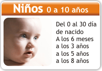

La buena salud visual no solo depende de la ausencia de gafas muchos pacientes creen equivocadamente que el no requerir gafas es garantía de buena salud visual, pero enfermedades como el glaucoma, la degeneración macular y la catarata suelen progresar de manera asintomática y pueden presentarse en pacientes que no han tenido problemas de refracción, es decir, nunca han necesitado gafas.
Debe entenderse que la adaptación y cambio de gafas es solo un componente de la salud visual. Además de monitorear los problemas de refracción debe cumplirse una frecuencia de prevención que nos asegure la ausencia de enfermedad. La frecuencia de visita al médico oftalmólogo recomendada por la Asociación Colombiana de Glaucoma y la Academia Americana de Oftalmología, para pacientes sanos varía según la edad de la siguiente forma:

RCN | Bogotá - Colombia
El glaucoma es una grave enfermedad en los ojos que puede dejar ciega a la persona que la padece. Uno de los factores de riesgo es que ataca de forma silenciosa.
El glaucoma es la pérdida de visión progresiva hasta quedar ciego como consecuencia de las fallas en el nervio óptico, “el cual es el encargado de llevar la información desde el ojo hasta el cerebro y está compuesto aproximadamente por un millón de fibras y se van perdiendo una a una cuando hay glaucoma”, aseguró Francisco Rangel, de la Asociación Colombiana de Glaucoma.
Ésta enfermedad típicamente no produce ningún síntoma y aparece a cualquier edad por factores genéticos.
El Glaucoma puede atacar de manera silenciosa - RCN
Cinco de cada cien latinos lo desarrollan después de los 40 años de edad. “En niños la probabilidad de tener un glaucoma, nacer con un glaucoma congénito es de uno en siete mil, 10 por ciento de los pacientes mayores de 40 años de edad tienen algún tipo de glaucoma, lo cual es mucho”, señaló el especialista.
En las enfermedades del ojo no es la más frecuente pero si la más grave y es tratable cuando se diagnostica a tiempo.
“Debe chequearse cuando nace, al año, a los 3, a los 5 y a los 8 años de edad. De ahí en adelante cada cuatro años es suficiente. Cuando llegamos a los 35 años de edad lo recomendable en los Colombianos es que nos evaluemos cada dos años y después de los 50, cada año. Es muy importante que la evaluación sea hecha por médicos oftalmólogo”, añadió Rangel.
Día Mundial del Glaucoma | Diario El Espectador - Bogotá
Al momento de maquillarse, hace seis años, a Marieta Parra se le incrustó un pedacito de pestañina en uno de sus ojos. Terriblemente afectada, trató de sacárselo pero no pudo, entonces decidió acudir a un médico oftalmólogo quien después de sacarle el cuerpo extraño le diagnosticó glaucoma.
Marieta forma parte de unos 50.000 pacientes del país a los que se les dictaminó, accidentalmente, ésta enfermedad conocida como el “ladrón silencioso de la visión”, la cual también afecta a otras 950.000 personas que desconocen la presencia de éste peligroso inquilino que ataca paulatinamente la vista de sus víctimas hasta dejarlas ciegas.
Marieta puede decir hoy que gracias a un accidente descubrió que en sus ojos avanzaba una enfermedad que estaba acabando con su visión. “Acudía anualmente a la evaluación de gafas, pero siempre salía bien de ese examen”, dice ésta mujer de 46 años al recordar los días previos a la valoración oftalmológica en la que se le descubrió el glaucoma.
No todo el mundo corre con la suerte de Marieta. De acuerdo con la Asociación Colombiana de Glaucoma (ACG), 11 de cada 100 colombianos después de los 40 años pueden desarrollar la enfermedad y uno de cada 30 a cualquier edad la adquiere. Pero debido a la condición silenciosa de la misma, quienes la padecen no lo saben o su diagnóstico se confunde con otras patologías.
Sin embargo, no todo está perdido, la prevención de la ceguera por glaucoma es posible con un diagnóstico y tratamiento adecuados. Según informes de la Organización Mundial de la Salud, 8 de cada 10 casos de ceguera se hubiesen podido prevenir con un examen hecho a tiempo.
Francisco Rangel, director científico de la ACG, explica que el 90% de los pacientes que han llegado a su consultorio no sabían sobre la existencia de la enfermedad ni cómo diagnosticarla o detener su progreso.
Lo cierto es que la rapidez con la que se ha expandido esta enfermedad ha encendido las alarmas de los médicos en todos los países. Según las estadísticas de las organizaciones internacionales, existen 70 millones de personas con glaucoma. Por eso, según Rangel, fue muy importante que desde el año pasado se institucionalizara el 6 de marzo como el Día del Glaucoma y se emprendiera una campaña para alertar sobre el peligro de ésta enfermedad que se ha convertido en la segunda causa de ceguera en el mundo.
¿Qué es el glaucoma?
Es una enfermedad que deteriora progresivamente el campo visual, la persona puede perder un gran porcentaje de su visión e incluso quedar ciega.
El glaucoma afecta el nervio óptico, la estructura encargada de transmitir las imágenes desde el ojo hasta el cerebro.
Las personas con antecedentes familiares tienen más riesgo de padecerla. Sin embargo, ésta es una enfermedad que puede aparecer a cualquier edad, incluso desde el nacimiento.
El Glaucoma afecta a cerca de un millón de personas en Colombia - RCN
Entrevista a médico
Fuente Especial de Salud Visual
El Tiempo
Doctor Francisco Rangel Rueda MD
Médico Cirujano y Oftalmólogo
Director Científico Asociación Colombiana de Glaucoma – Alta Visión
Cada cuánto uno debe cambiar de gafas o lentes?
Se recomienda cambiar las gafas una vez por año, el cambio puede ser necesario por dos razones:
(1) Por cambio en la fórmula: un paciente con problemas refractivos (miopía, hipermetropía, astigmatismo o presbicia) debe asistir a una evaluación completa de sus ojos una vez por año, en ésta evaluación se identificará si la fórmula ha cambiado y se realizarán los ajustes necesarios para una buena salud visual. Algunas veces los cambios en la fórmula no son notados directamente por el paciente, pero pueden identificarse con el examen médico.
(2) Por el deterioro natural del lente y la montura: las gafas diariamente están expuestas al sudor, el sol y la acumulación de polvo, lo cual hace que el lente se raye, pierda transparencia y la montura pierda su color, se desgaste y hasta se rompa; deterioro que se hace mas acelerado teniendo en cuenta que culturalmente tenemos un solo par de gafas para todas las ocasiones. El buen estado de las gafas está directamente relacionado con la calidad visual, esto sin perder de vista que las gafas son un elemento que está en nuestra cara y que usar gafas deterioradas, además de afectar nuestra visión, afecta nuestra buena imagen. En el caso de los lentes de contacto, estos están fabricados en diferentes materiales, cada posibilidad de material tiene su propia vida útil. Actualmente en el mercado se pueden encontrar materiales con vida útil de un día, una semana, un mes, hasta máximo de un año. Es importante aclarar que después del tiempo indicado, el material del lente pierde sus características y hacer caso omiso de ésta condición, puede dañar de manera agresiva la salud visual del paciente.
En qué casos preferir las gafas y en cuál los lentes de contacto? En términos de salud, entre éstas dos alternativas lo ideal son siempre las gafas. Los lentes de contacto no se recomiendan a todos los pacientes, pues al estar en contacto directo con el ojo, tienen implícitos otros riesgos que deben ser muy bien evaluados antes de realizar su adaptación.
Dentro de los principales riesgos se incluyen: infecciones, inflamaciones en la superficie del ojo, procesos alérgicos secundarios a los lentes o a los líquidos usados para su mantenimiento, resequedad ocular, adelgazamiento o desgaste de la córnea y en algunas ocasiones una mayor progresión del defecto refractivo. La mayoría de estas condiciones pueden cursar sin síntomas durante mucho tiempo, por eso es importante que la adaptación de los lentes sea realizada en una valoración completa y monitoreada anualmente con exámenes especiales.
El lente de contacto, ofrece importantes beneficios en pacientes con defectos refractivos muy severos o con diferencias importantes entre un ojo y otro, los cuales no pueden ser corregidos con láser. Igualmente pueden ser útiles para uso ocasional en los deportistas, siempre y cuando hayan sido adaptados cumpliendo todos los criterios médicos y se monitoree anualmente su uso. Por qué es clave tener cuidado a la hora de comprar sus gafas y que éstas sean de calidad, en todo sentido?
Actualmente en nuestro país existen deficiencias en el control de calidad de los lentes oftálmicos, por esto es importante que todo usuario de gafas tenga claridad sobre 4 aspectos, que en el ámbito comercial pueden generar confusión:
El filtro
Sus gafas siempre deben tener verdadero filtro UV. La exposición a los rayos UV del sol pueden causar en los ojos catarata, degeneración macular, pterigios, pingüeculas y alteraciones a nivel cutáneo. Los filtros oftálmicos tienen la finalidad de absorber o desviar la radiación UV visible e invisible y evitar así que llegue hasta las estructuras internas y externas del ojo. Ésta protección es importante incluso desde la niñez, ya que la toxicidad de los rayos UV se acumula a lo largo de toda la vida.
El precio y la calidad
Cuando hablamos de lentes oftálmicos podemos afirmar que cuando el precio
es diferente, la calidad del lente también es diferente. Existen diferentes calidades en los lentes que utilizamos para las gafas, las cuales proporcionan diferentes niveles de claridad, confort y protección, cada tipo de calidad tiene un precio diferente. Por eso el paciente no debe elegir sus gafas basado únicamente en el precio, un cambio en el precio, seguramente corresponde a un cambio en la calidad. Por otro lado, es difícil que el paciente logre evaluar la calidad entre los diferentes lentes, pues para identificar defectos como aberraciones, descentramiento, falta de centro óptico y falta de filtro entre otros, se requiere del uso de tecnología óptica, la cual no está al alcance de los pacientes; por ésto es importante que las gafas se adquieran en sitios especializados en salud.
Dónde comprarlas?
Únicamente en instituciones especializadas en salud visual. Adquirir las gafas en lugares no dedicados a la salud visual, puede enfrentarnos a prácticas donde prima un sentido comercial, sin importar la salud visual. Dentro de las condiciones más comunes para reducir el precio de las gafas esta:
- Emplear lentes de dudosa calidad (estos lentes suelen ser lentes de retal o material de desecho en otros países)
- Utilizar una única base de lente para distribuirlo en 2 pacientes o 2 ojos, sacrificando el centro óptico del mismo;
Éstas prácticas hacen que el precio sea mucho más cómodo para el paciente, pero reducen la calidad visual e incluso puede generar efectos secundarios.
No a las gafas prefabricadas La perfecta fórmula de las gafas depende de varios factores como:
- El defecto refractivo (miopía, hipermetropía, astigmatismo o presbicia): los cuales se pueden presentar solos o en combinación, por ejemplo un paciente puede tener únicamente miopía o tener miopía, astigmatismo y presbicia.
- La formulación se hace para cada ojo por aparte: un mismo paciente, no suele tener la misma fórmula en el ojo derecho e izquierdo.
- La distancia interpupilar: la distancia entre las pupilas es diferente para cada paciente, según el tamaño de la cara y de los ojos.
La combinación de estos tres factores hace que la fórmula para las gafas sea totalmente personalizada. Es imposible encontrar unas gafas prefabricadas (gafas que fueron producidas en grandes volúmenes, todas con la misma fórmula) que cumplan con los requerimientos personalizados de un paciente. La calidad de sus gafas, afecta directamente la calidad de su visión, no deje ninguno de estos aspectos al azar. NOTA importante:
La buena salud visual no solo depende de la ausencia de gafas muchos pacientes creen equivocadamente que el no requerir gafas es garantía de buena salud visual, pero enfermedades como el glaucoma, la degeneración macular y la catarata suelen progresar de manera asintomática y pueden presentarse en pacientes que no han tenido problemas de refracción, es decir, nunca han necesitado gafas.
Debe entenderse que la adaptación y cambio de gafas es solo un componente de la salud visual. Además de monitorear los problemas de refracción debe cumplirse una frecuencia de prevención que nos asegure la ausencia de enfermedad. La frecuencia de visita al médico oftalmólogo recomendada por la Asociación Colombiana de Glaucoma y la Academia Americana de Oftalmología, para pacientes sanos varía según la edad de la siguiente forma:
El tratamiento SLT es un método sencillo y altamente efectivo para el manejo del glaucoma, que logra reducir la presión intraocular (PIO) sin los efectos adversos del medicamento.
Desde el 2.008 la Asociación Colombiana de Glaucoma puso a disposición de los Colombianos el tratamiento láser selectivo (SLT).
Éste tratamiento puede ser utilizado en hombres y mujeres que deseen un control efectivo del glaucoma, también en pacientes que no pueden administrarse el medicamento, que tienen un historial de fracaso con otros tratamientos y que no han seguido las recomendaciones de su médico oftalmólogo para iniciar el tratamiento, también para personas intolerantes a los medicamentos o que presentan efectos adversos como ojo rojo, rascado, sensación de ardor o cuerpo extraño.